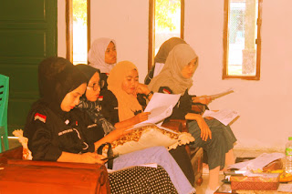

Kekerasan Seksual Merajalela Hingga Menggempar ke Seluruh Indonesia
Menurut Undang-Undang Nomor 35 Tahun 2014, kekerasan adalah setiap perbuatan terhadap anak yang berakibat timbulnya kesengsaraan atau penderitaan secara fisik, psikis, seksual, dan/atau penelantaran, termasuk ancaman untuk melakukan perbuatan, pemaksaan, atau perampasan kemerdekaan secara melawan hukum.
Kekerasan seksual adalah kegiatan yang terdiri dari aktivitas seksual yang dilakukan secara paksa oleh orang dewasa terhadap anak atau oleh anak kepada anak lainnya. Kekerasan seksual meliputi penggunaan atau pelibatan anak secara komersial dalam kegiatan seksual, bujukan ajakan atau paksaan terhadap anak untuk terlibat dalam kegiatan seksual, pelibatan anak dalam media audio visual, dan pelacuran anak (UNICEF, 2014).
Jenis-jenis kekerasan seksual meliputi pemerkosaan, pelecehan seksual secara mental atau fisik, menyebarkan video atau foto yang mengandung konten seksual tanpa izin, pemaksaan kegiatan seksual, pernikahan paksa, aborsi paksa, kekerasan pada organ seksual termasuk pemeriksaan wajib keperawanan, serta pelacuran dan eksploitasi komersial seksual.
Faktor penyebab kekerasan seksual dapat dibagi menjadi beberapa kategori:
- Faktor individu: Pendidikan rendah, kurangnya pengetahuan dan keterampilan menghindar dari kekerasan seksual, kontrol perilaku buruk, riwayat kekerasan, menyaksikan kekerasan seksual, dan penggunaan obat-obatan.
- Faktor lingkungan sosial: Kebudayaan atau kebiasaan yang mendukung kekerasan seksual, kekerasan yang dilihat melalui media, kelemahan kesehatan, pendidikan, ekonomi, dan hukum, serta aturan yang tidak sesuai atau berbahaya.
- Faktor hubungan: Kelemahan hubungan antara anak dan orangtua, konflik dalam keluarga, berhubungan dengan pelaku kekerasan, dan tergabung dalam geng atau komplotan.
Saat ini, kekerasan seksual terjadi di mana-mana. Banyak asumsi yang menyalahkan wanita karena pakaian mini atau seksi yang mereka kenakan. Namun, kasus seperti kejadian di pondok pesantren di Bandung, di mana seorang guru mencabuli santriwatinya yang berpakaian tertutup, menunjukkan bahwa pakaian bukanlah alasan.
Hasrat dan nafsu yang tidak bisa dikontrol serta kehilangan akal sehat adalah penyebab utama kekerasan seksual. Kondisi ini bisa disebut sebagai hiperseksualitas atau hypersex, di mana seseorang mengalami kecanduan seks dengan dorongan seksual yang sangat kuat dan obsesi terhadap aktivitas seksual.
Hari ini, tidak hanya anak perempuan yang perlu dididik, tetapi juga anak laki-laki, agar kekerasan seksual tidak terjadi berulang-ulang. Pendidikan seksual sangat penting untuk meminimalisir terjadinya kekerasan seksual. Pendidikan seksual mengajarkan tentang seksualitas manusia, termasuk hubungan intim, anatomi seksual, pendidikan reproduksi, infeksi menular seksual, aktivitas seksual, orientasi seksual, identitas gender, pantangan seksual, kontrasepsi, dan hak dan tanggung jawab seksual.
Pendidikan seksual harus disesuaikan dengan perkembangan dan berbasis penelitian tentang seksualitas manusia dan reproduksi seksual. Pendidikan ini disediakan oleh dokter anak, sekolah, profesional lainnya, dan orang tua. Pendidikan seksual membantu anak-anak dan remaja memahami hubungan yang sehat, aktivitas seksual yang bertanggung jawab, dan kesehatan reproduksi mereka.
Pendidikan seksual tidak mendukung anak untuk melakukan hubungan seksual, tetapi menjelaskan fungsi alami seks sebagai bagian diri mereka serta konsekuensinya jika disalahgunakan. Pendidikan seks berupaya mengajarkan, menyadarkan, dan memberikan informasi tentang masalah seksual. Pengetahuan tentang fungsi organ reproduksi disertai dengan penanaman moral, etika, dan agama sangat penting untuk mencegah penyalahgunaan organ reproduksi. Pendidikan seks perlu diberikan sejak dini untuk mencegah penyimpangan seksual pada anak.
Penulis: Atika Malasari